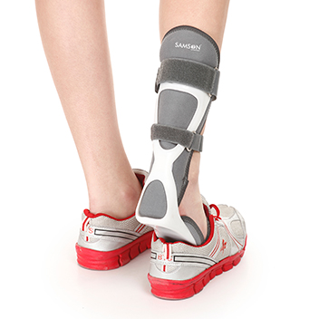

AK-0706 - Foot Drop Splint (Right/Left)(With Liner)
Ankle foot drop splint is Ideal for prevention and treatment of foot drop, especially in the elderly and for everyone dealing with multiple sclerosis, cerebral palsy, sciatica, spinal injury, and other conditions that can cause night splint drop foot. Helps to stabilize the ankle brace while walking and restores balance after surgery. Also known as Ankle Foot Orthosis (AFO), it can be worn with most types of footwear. Lightweight, sturdy with a strong leaf-spring action for walking. Available with foam lining in S, M & L sizes for now. Note: Kindly consult your Physician or Orthopaedic Specialist before using this productBenefits of foot drop splint
- Ankle foot drop foam lining reduces sweating and slippage and makes it comfortable for extended use
- Helpful as a foot support for patients with nerve disorders like peripheral nerve paralysis, peroneal/pretibial nerve or muscle damage
- Stabilizes the ankle in case of plantarflexion contracture or other injuries. Aligns the foot and ankle for better functional mobility
- Suitable during post-surgical care and also for burn patients
Features
- Polypropylene: The splint is constructed of sturdy polypropylene which increases durability. It has strong resilience and flexibility for effective leaf spring action (which provides the push while walking)
- Customisable: The splint can be customised as per the user’s comfort using a hot air gun
- Thin yet sturdy construction: Made of polypropylene, a slim profile allows it to be worn inside the shoe as well
- Anatomical design: The splint is anatomically designed which provides good weight distribution and maintains the foot in the functional position (dorsiflexion)
- Closed-cell PE foam: The top padding is made of durable closed-cell PE foam which is skin-friendly, hypoallergenic, non-toxic, latex-free and odourless
- Air-filled cushion pad: 3D air-filled cushion pad provides necessary comfort and ventilation
- Lightweight: Easy to wear and move around the whole day
How to use foot drop splint
- Make sure you order right-sized product from our size chart
- Sit in a straight position on a chair with your feet resting on the ground
- Put the foot drop splint in an upright position
Size : S/M/L
- Put the foot drop splint in an upright position
- Place the affected foot on the footplate Ensure that the contours of your leg are aligned with the foot drop splint

- Secure the Velcro at the calf by reversing through the buckle
- In the same way secure the velcro at the feet as well

how to wear foot drop spint samson
- Tie the ankle strap tightly around the ankle to get the proper grip
- When wearing shoes choose a slightly bigger size for comfortable placement and movement

Samson orthotics specializes in designing, manufacturing, and providing a wide range of products that support and enhance orthopedic care. Our brands offer various accessories that aid in the treatment, recovery, and overall well-being of individuals with musculoskeletal conditions or injuries. Here is some information about our Samson orthotics:
- Product Range: Samson orthotics typically offer a diverse range of products that cater to different needs and conditions. This includes items such as braces, supports, splints, compression garments, orthotic inserts, slings, immobilizers, and other assistive devices.
- Quality and Performance: Our reputable orthopedic accessories prioritizes the quality and performance of its products. They employ rigorous testing procedures and adhere to industry standards to ensure that our accessories provide effective support, durability, and comfort.
- Research and Innovation: Our brands in this field invest in research and development to stay at the forefront of orthopedic technology. They strive to innovate and introduce new products that incorporate the latest advancements in materials, design, and functionality.
- Collaboration with Healthcare Professionals: Samson orthotics often collaborate with healthcare professionals, including orthopedic surgeons, physical therapists, and other specialists. This collaboration helps ensure that the brand's products are designed to meet the specific needs and requirements of patients and healthcare providers.
- Customization and Personalization: Our Samson orthotics offer customization and personalization options for our products. This can include adjustable features, various sizes, and tailored solutions to accommodate different body types, conditions, and preferences.
- Education and Support: Reputable brands prioritize patient education and provide resources and support to healthcare professionals. This can involve training programs, educational materials, and online resources to enhance understanding and facilitate proper usage of our products.
- Compliance with Regulations: Samson orthotics adhere to regulatory guidelines and standards governing the manufacturing and distribution of medical devices. They ensure that our products meet safety and quality requirements set by relevant authorities.
- Customer Satisfaction: Customer satisfaction is a key focus for Samson orthotics. They strive to provide exceptional customer service, address concerns promptly, and maintain open channels of communication to support our customers' needs and ensure our satisfaction.
- Brand Reputation: Established Samson orthotics often have a solid reputation built on years of experience, expertise, and positive customer feedback. They are known for our reliability, effectiveness, and commitment to improving the lives of individuals with orthopedic conditions.
- Continued Product Development: We continuously work on enhancing and expanding our product lines. They actively seek feedback from users, healthcare professionals, and researchers to identify areas for improvement and develop innovative solutions.